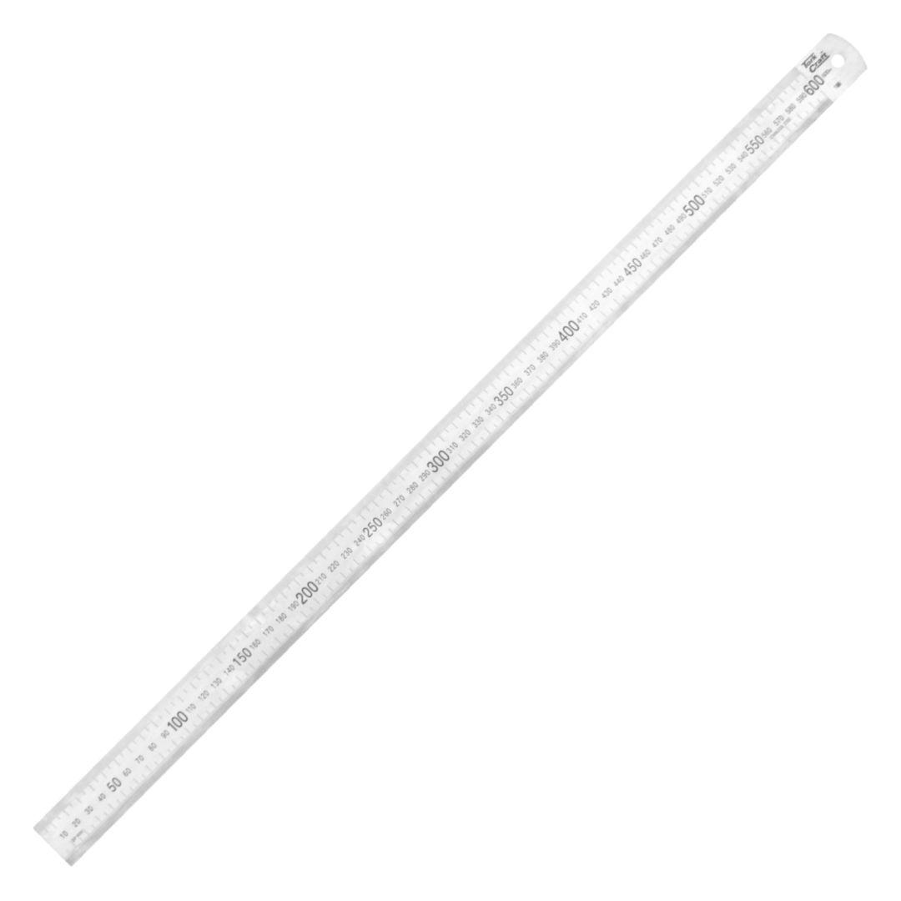

ME01060

Length: 600mm
Width: 30mm
Thickness: 1.2mm
When a steel ruler is used correctly, it can be used as an accurate measuring instrument. The graduations are engraved and evenly divided to have a high contrast to improve readability. The accuracy can be read to within 0.5mm.
The ruler is a straight edge that can be used in many industries. It is an essential measuring device in the woodworking, machinist and technical draughting environments.
Some steel rulers have conversion tables and tap drill diameter tables on the back that are indispensable.